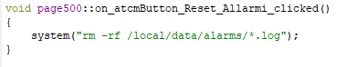

Les alarmes sont gérées par l'utilisateur comme décrit dans le chapitre “Fonctionnement des alarmes”
En entrant le code suivant dans la fonction “ void loop(void)” de la page “automation.cpp” il est possible de reconnaître les alarmes par un bouton ATCM ou directement depuis le code plc.
if (Reset_alarms){
pthread_mutex_lock(&alarmevents_list_mutex);
{
for (int i = 0; i < _active_alarms_events_.count(); i++)
{
if (! _active_alarms_events_.at(i)->isack)
{
_active_alarms_events_.at(i)->ack = QDateTime::currentDateTime();
_active_alarms_events_.at(i)->isack = true;
}
}
}
pthread_mutex_unlock(&alarmevents_list_mutex);
doWrite_Reset_alarms(false);
}
ATTENTION: la variable “Reset_alarms” est une variable de la “Crosstable” (Type: BIT, Behavior: Read/Write).
Pour supprimer l'historique des alarmes, vous devez effectuer un “Go to slot...” → “clicked” sur un ATCMbutton (voir la section “PAGE UNIQUE” du chapitre “Réalisation d'une automatisation”) et insérer, dans la fonction, le code suivant:
system("rm -rf /local/data/alarms/*.log");
Voir figure:
